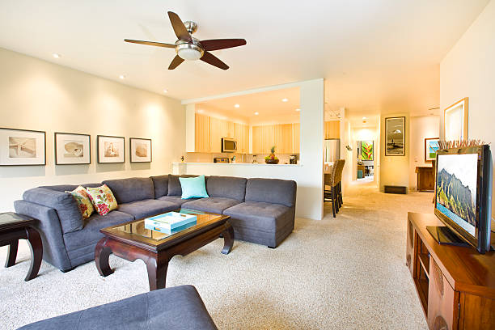

Dixon Kentucky
info@topcarpetflooring.pro
Dixon Kentucky
info@topcarpetflooring.pro

Upgrade your space with premium carpets and flooring in Dixon Kentucky . We offer a variety of styles and colors, ensuring your home gets the perfect flooring solution.
Click Here To Call Us (877) 848-1711At Carpet and Flooring, we specialize in providing high-quality carpet and flooring solutions across Dixon Kentucky . Whether you're renovating your home or updating your office, we offer a wide variety of premium flooring options that combine durability, style, and affordability. Our expert team is dedicated to transforming your space with precision and care.
We understand that choosing the right flooring is essential to enhancing the overall aesthetic of your property. That's why we offer a vast selection of carpets, hardwood, laminate, and tile flooring, with styles that suit every taste and budget. From classic to modern designs, our collection is designed to meet the needs of any home or business in Dixon Kentucky .
Why We Stand Out in Dixon Kentucky :
Expert Installation Services: Our skilled professionals provide seamless installation, ensuring that your flooring looks beautiful and lasts for years.
Wide Selection: We offer an extensive range of carpet, hardwood, and other flooring options to match your style and budget.
Competitive Pricing: We believe in offering quality flooring solutions at affordable prices.
Customer Satisfaction: Our priority is ensuring that every customer in Dixon Kentucky is 100% satisfied with their new flooring.
If you're looking for the best carpet and flooring services in Dixon Kentucky contact us today to get started with a free consultation!
Residential & commercial Carpet and Flooring
Quality services at affordable prices
Immediate 24/ 7 emergency services


Looking for top-tier carpet and flooring services in Dixon Kentucky ? At Premium Carpet and Flooring, we specialize in providing high-quality flooring solutions tailored to meet your needs. Whether you're updating your home or enhancing a commercial space, our expert team offers exceptional service, using only the finest materials to deliver stunning results that will last for years.
Our wide range of flooring options includes luxurious carpets, hardwood, laminate, and vinyl. We offer professional installation services that ensure your floors are not only beautiful but also durable. As the best carpet and flooring company in Dixon Kentucky we pride ourselves on our attention to detail, customer satisfaction, and unbeatable pricing. We understand that your floors are an investment, which is why we take extra care to install them flawlessly and efficiently.
Why choose Premium Carpet and Flooring? Our experienced professionals provide personalized recommendations based on your style, budget, and preferences. From design consultation to installation, we handle every aspect of your flooring project with precision and care.
With a commitment to excellence, we have built a solid reputation across Dixon Kentucky for delivering flooring solutions that transform spaces and exceed expectations. Contact us today for a consultation and discover why we're the trusted name in carpet and flooring services in Dixon Kentucky .
Residential & commercial Carpet and Flooring
Quality services at affordable prices
Immediate 24/ 7 emergency services
Choosing the best carpet and flooring options for your home can be a daunting task. Our company prides itself on offering the highest quality selections available in Dixon Kentucky ensuring that you have a wide range of choices to suit every style and need. From plush carpets to luxurious hardwood and innovative vinyl options, we have the flooring you’ve been searching for.
Why Choose Us for the Best Flooring Options?
1. **Extensive Variety**: With a robust inventory of flooring products, you can find everything from timeless classics to modern trends in our showroom.
2. **Knowledgeable Staff**: Our team is trained to provide guidance on the best products based on your specific preferences, lifestyle, and budget.
3. **Expert Installation Services**: Quality products deserve quality installation. Our installation experts ensure that every floor is laid with precision and care.
4. **Long-lasting Quality**: Every product we offer is selected for its durability and quality, providing you with flooring solutions that last.
Discover the best carpet and flooring options with our expert team .

Laminate flooring is an excellent choice for those seeking a beautiful yet budget-friendly flooring option. With advancements in technology, laminate can now convincingly mimic the appearance of hardwood, stone, or tile while offering practicality and durability. Our laminate flooring installation services are designed to give your home a fresh new look without the hefty price tag.
Why Choose Us for Laminate Flooring Installation?
1. **Stylish Choices**: We carry a diverse range of laminate styles and finishes, allowing homeowners to find the perfect design for their space.
2. **Durability**: Laminate flooring is designed to withstand scratches, dents, and fading, making it ideal for high-traffic areas.
3. **Quick Installation**: Our experienced installers work efficiently to minimize disruption and provide a seamless flooring experience.
4. **Easy Maintenance**: With its resistance to stains and moisture, laminate flooring is easy to clean, making it a practical option for busy households.
Enhance your home’s beauty and functionality with laminate flooring installed by our skilled team .

Laminate flooring offers an attractive option for those seeking the look of hardwood or tile without the hefty price tag. Our laminate flooring installation services provide you with high-quality, stylish solutions that fit your budget. With a wide selection of designs and finishes, you can achieve the aesthetic you desire while ensuring durability and ease of maintenance. Our expert installers are trained in the latest methods to ensure a flawless installation that maximizes the longevity and performance of your laminate flooring. Whether you're updating a single room or an entire home, we guarantee premium service and exceptional results.

Flooring installation for homes is a significant decision that can transform your living space. Our company specializes in providing professional and dependable flooring installation services tailored to meet the unique needs of homeowners in Dixon Kentucky . We offer a wide selection of flooring materials and styles, ensuring you get the perfect fit for your home.
Why Choose Us for Your Home’s Flooring Installation?
1. **Tailored Solutions**: We work closely with you to determine the best flooring options based on your preferences, lifestyle, and budget.
2. **Quality Assurance**: Our team is highly trained in installation techniques for various flooring materials, ensuring a flawless finish.
3. **Timely Installation**: We respect your time and aim to complete installations promptly without sacrificing quality.
4. **Satisfaction Guarantee**: Your satisfaction is our top priority. We won’t rest until you're thrilled with your new floors.
Transform your home with our expert flooring installation services. Contact us today for reliable flooring installation .

Your home deserves the best flooring, and our flooring installation services in Dixon Kentucky fulfill that promise. We pride ourselves on offering a wide selection of high-quality materials suitable for any home, ensuring you find the perfect fit for your style and needs.
Our professional team is equipped to handle all types of flooring installations, ensuring that every project receives the attention to detail it deserves. We take the time to understand your vision and execute it efficiently, delivering stunning results that enhance your home's beauty and functionality. Trust us for your flooring installation and experience unparalleled service and quality craftsmanship.
The foundation of a productive workspace is often the flooring beneath. Our office flooring installation services in Dixon Kentucky are designed to create professional environments that inspire creativity and efficiency. Whether your office needs carpet, tile, or vinyl, we have the perfect solutions to suit your business style.
We understand how essential it is for renovations to be completed timely and efficiently, so our team works to minimize disruptions to your business operations. Our consultation process allows us to align with your needs and preferences, ensuring that the chosen flooring enhances your office ambiance. Choose us for your office flooring installation and transform your workspace with style and professionalism.

Our professional carpet installation service guarantees exceptional craftsmanship paired with an array of elegant carpet choices. We take the time to understand your style, budget, and needs to help you find the perfect carpet that enhances your space, whether it’s for residential or commercial use.
Our trained installation experts ensure a seamless fit, taking care of every detail so that your new carpet will look fantastic and withstand daily use. With our commitment to quality and customer satisfaction, we stand out as the preferred choice for professional carpet installation .

Upgrading your floors can be a daunting task, but our carpet removal and installation services make the process straightforward and stress-free. If it's time for a new look, our team will efficiently remove your existing carpet and prepare your space for fresh installation.
We handle everything from the removal process to the careful installation of your new carpeting, ensuring that all areas are clean and ready for use after the job is completed. Our friendly and experienced crew prides themselves on maintaining a high level of professionalism and respect for your home. Count on us for hassle-free carpet removal and installation that transforms your space beautifully.
Years Experience
Expert Technicians
Satisfied Clients
Compleate Projects
When it comes to enhancing the beauty and functionality of your home or business in Dixon Kentucky Top Carpet Flooring is the name you can trust. With years of experience serving homeowners and businesses across all cities in Dixon Kentucky we pride ourselves on delivering exceptional results tailored to your unique needs.
At Top Carpet Flooring, we believe every space deserves a touch of elegance and durability. That’s why we offer an extensive selection of high-quality carpets, hardwood, laminate, vinyl, and tile flooring. Our team works closely with you to understand your preferences and recommend flooring solutions that blend seamlessly with your style and budget.
What sets us apart? Our commitment to quality craftsmanship and customer satisfaction. From initial consultation to professional installation, our skilled team ensures every project is handled with precision and care. We also use the latest techniques and top-notch materials to guarantee long-lasting results you’ll love for years to come.
Our dedication to providing competitive pricing without compromising on quality has earned us a reputation as the go-to flooring experts in Dixon Kentucky . Plus, our transparent process ensures no hidden fees or surprises, making your experience smooth and stress-free.
Discover why residents and businesses across Dixon Kentucky consistently choose Top Carpet Flooring. Contact us today for a free consultation and let us transform your space with beautiful, durable flooring solutions that stand the test of time.
When searching for carpet and flooring near me in Dixon Kentucky look no further than our expert team. We specialize in providing outstanding carpet and flooring services that meet the unique needs of each customer. With years of experience serving residential and commercial clients, we understand the importance of quality materials and impeccable installation.
Our knowledgeable staff will guide you through every step of the process, ensuring you find the perfect flooring solution that fits your style, budget, and requirements. We offer a wide selection of carpets, vinyl, hardwood, and eco-friendly options, making us your go-to choice for all flooring needs. Our commitment to excellence sets us apart in the competitive flooring market, making your decision to choose us an easy one.
Your home is your sanctuary, and the right flooring can make all the difference. Our residential carpet installation services are designed to elevate the comfort and aesthetics of your living space. We understand that every home is unique, and we offer a wide variety of carpet choices, including plush, Berber, and looped styles, from leading brands that guarantee durability and comfort.
Choosing us for your installation means opting for quality and reliability. Our installation team consists of skilled professionals who take every measure to ensure a flawless and timely installation. We use advanced techniques and tools to minimize disruption and leave your home spotless. Additionally, our carpets come with warranty options that provide peace of mind for years to come. Enjoy the transformation of your home with our exceptional carpet installation services.
In today's fast-paced business world, having a professional and inviting commercial space is paramount. Our commercial flooring services are designed for businesses of all sizes, whether you're looking to revamp an office, retail space, or industrial site.
We specialize in a variety of commercial flooring options, including vinyl, carpets, tiles, and hardwood that are not only aesthetically pleasing but also durable and easy to maintain. Our skilled team understands the unique demands of commercial environments and assures a quick, efficient installation that minimizes downtime. By choosing our services, you can trust that you're enhancing your business's image with long-lasting flooring solutions that will impress your clients and staff alike.
Quality flooring doesn't have to come with a hefty price tag. At our company, we believe everyone deserves beautiful, durable flooring at an affordable price. Our selection of budget-friendly carpet and flooring options doesn’t skimp on quality.
We work directly with manufacturers to pass on discounts and special offers to our customers, ensuring that you find the perfect flooring solution that fits your budget. Our team is adept at finding the best options for your space while keeping your financial constraints in mind. With our transparent pricing and no hidden fees, you can trust that you're getting the best value without compromising on quality.
Finding the best carpet and flooring companies can be a daunting task. However, our reputation speaks volumes about our commitment to quality and customer satisfaction. For years, we have built lasting relationships with homeowners and businesses, and our extensive portfolio of successful projects showcases our expertise in the flooring industry.
What separates us from other companies? Our rigorous selection process for suppliers ensures that we only offer the best products that meet high-performance standards. Additionally, our professional installers are trained in the latest techniques, guaranteeing a finish that not only looks great but also performs excellently over time. Choose us for your flooring needs, and enjoy peace of mind knowing you've selected one of the best in the business.
Personalization is key when it comes to flooring. Our custom flooring installation service allows you to create a unique space that reflects your style and functionality needs. We offer a variety of materials, colors, and textures, empowering you to bring your vision to life.
Our design consultants are here to assist you throughout the selection process, providing expert advice on trends and styles that best suit your space. Once you've made your selection, our expert installation team ensures that every detail is handled with precision and care, transforming your home into a reflection of your personal taste. Choose our custom flooring installation to stand out from the crowd with a tailor-made solution that perfectly fits your lifestyle.
Nothing compares to the timeless elegance of hardwood flooring. Our hardwood flooring installation service in Dixon Kentucky is designed to provide you with a premium experience from selection to installation. With a wide variety of wood species, colors, and finishes available, we help you choose the perfect hardwood options that match your home décor and lifestyle. Our licensed and experienced installers ensure that each plank is meticulously laid for a flawless finish, increasing your home's value while providing warmth and sophistication. We also offer maintenance tips to keep your hardwood floors looking pristine for years to come. Trust us to bring the beauty of hardwood into your space!
Over time, even the best flooring can show signs of wear and tear. Our flooring repair services cater to homeowners and businesses needing a fast and efficient solution to flooring damage. Whether it’s scratches on your hardwood floors or stains on your carpet, our repair team is equipped to restore your flooring to its original beauty.
Why Choose Our Flooring Repair Services?
1. **Expert Technicians**: Our repair specialists are trained to handle a variety of flooring types, ensuring high-quality repairs that are virtually invisible.
2. **Timely Solutions**: We understand that damaged flooring can disrupt your daily life. Our team works quickly and efficiently to resolve issues with minimal downtime.
3. **Affordable Rates**: We offer competitive pricing on all repairs, helping you maintain your flooring without overspending.
4. **Comprehensive Repairs**: From minor touch-ups to significant damage, we’ve got the equipment and expertise to tackle any flooring repair project.
Bring back the beauty of your floors with our flooring repair services .
Flooring repairs are essential for maintaining the beauty and integrity of your home or business. Our flooring repair services are designed to extend the life of your flooring investments. Whether you're dealing with scratches, dents, or water damage, our experienced team can identify the issue and offer effective solutions. We use high-quality materials that match your existing flooring, ensuring seamless repairs that restore your floors to their original condition. Our prompt and professional service means you won’t have to deal with the hassle of prolonged repairs. Trust us to provide honest assessments and reliable services that keep your floors looking their best.
Vinyl flooring has gained immense popularity due to its versatility, durability, and aesthetic appeal. Our vinyl flooring installation services offer a wide range of styles and finishes, including luxury vinyl plank (LVP) that mimics the look of natural wood or stone.
Our team is experienced in handling all aspects of vinyl flooring installation, ensuring that your new flooring is securely installed and beautifully finished. We take pride in our affordable pricing without sacrificing quality, making it easy for you to upgrade your space. If you're looking for a hassle-free way to enhance your home or business, our vinyl flooring installation is the perfect solution.
When searching for a Carpet and Flooring Store Near Me in Dixon Kentucky you want more than just products; you want exceptional service and expertise. Our store offers a vast selection of carpets and floor coverings from well-known brands as well as local artisans.
Our friendly and knowledgeable team is eager to assist you in selecting the right carpets and floors for your home or office. Whether you're interested in the latest trends or classic styles, we offer guidance throughout every step of your shopping experience. Our commitment to quality and customer service makes us the go-to flooring store for everyone .
Luxury vinyl plank flooring is the perfect fusion of elegance and durability, making it a great choice for any space. Our luxury vinyl plank flooring installation service in Dixon Kentucky offers homeowners and businesses a stunning flooring option that can withstand the demands of high-traffic areas while maintaining an upscale appearance. With designs that mimic natural wood and stone, our luxury vinyl products offer exceptional realism and beauty. Our skilled installation team ensures that your flooring is fitted perfectly, providing a seamless finish that enhances the overall look of your interior. Plus, luxury vinyl plank is easy to maintain and resistant to moisture, making it an ideal choice for kitchens, bathrooms, and living areas alike.
Combining the softness of carpet with the durability of tile offers unique design opportunities, and our carpet and tile installation services will help you achieve that perfect balance. We understand that every space is different, and we provide customizable solutions tailored to your specific needs. Our experts help you choose the right styles, colors, and patterns to create stunning transitions between carpet and tile, enhancing both aesthetic appeal and functionality. We pride ourselves on meticulous installation practices that ensure both carpet and tile are laid beautifully and effectively, minimizing wear and tear over time. Trust our experienced team to deliver exceptional results in your space, providing both comfort and style.
Is it time to upgrade your floors? Our flooring replacement services in Dixon Kentucky make the transition to new flooring seamless and stress-free. Whether you desire to replace worn-out carpets or outdated tiles, we provide tailored solutions that keep your home looking fresh and modern.
We offer a variety of flooring materials to match your needs and preferences. With our experienced team overseeing every step, from selection to installation, you can trust us to deliver high-quality results that meet your specifications. Count on us to handle the heavy lifting while you enjoy a beautiful upgrade to your space.
Choosing eco-friendly flooring options is an important decision for environmentally-conscious consumers, and our services provide sustainable solutions without compromising on style or quality. We offer a variety of green flooring materials, including bamboo, cork, and recycled content carpets, ensuring that you can enhance your space while caring for the planet. Our knowledgeable staff will guide you in choosing the right sustainable materials for your home or business, emphasizing the environmental benefits alongside aesthetic appeal. With our expert installation team, your eco-friendly flooring will not only look great but also contribute positively to healthier indoor air quality and a sustainable future.
The combination of carpet and hardwood installation in Dixon Kentucky allows you to enjoy the best of both worlds—comfort and elegance. As flooring specialists, we can help you achieve a stunning design that incorporates both materials strategically throughout your space.
Our team will work with you to understand your vision, recommend the best locations for carpet and hardwood, and then handle the installation professionally. With our attention to detail and commitment to quality, we ensure a beautiful, harmonious look that adds value to your home. Mixing and matching these materials has never been easier and more attractive than with our expertly executed carpet and hardwood installation.
Life can be unpredictable, which is why waterproof flooring is an excellent choice for any environment. Our waterproof flooring installation services cater to homes and businesses looking for durable, water-resistant options that maintain their beauty despite potential spills or moisture.
We provide a variety of waterproof flooring solutions, including luxury vinyl, tile, and laminate, that can withstand the rigors of everyday life. Our experienced installation team ensures that your new flooring is installed correctly to preserve its waterproof properties. When you choose us, you're making a wise investment in flooring that safeguards your space against water damage.
Looking to enhance the beauty and comfort of your home or business? Our expert carpet installation and flooring solutions in Dixon Kentucky provide the perfect upgrade to any space. Whether you're renovating your living room, office, or entire property, our high-quality flooring options are designed to meet your needs and exceed your expectations.
At Carpet and Flooring, we offer a wide variety of flooring choices, including plush carpets, elegant hardwood, durable laminate, and modern tile. Our professional team ensures a seamless installation process, delivering precise craftsmanship and attention to detail. With years of experience in the industry, we understand the unique needs of Dixon Kentucky residents and businesses, providing customized solutions that perfectly complement your space and lifestyle.
Our team uses the latest techniques and premium materials to guarantee long-lasting results, whether you're upgrading for comfort, style, or practicality. We prioritize your satisfaction, ensuring timely installations with minimal disruption to your routine.
Ready to transform your space with exceptional carpet installation and flooring services in Dixon Kentucky ? Contact us today for a free consultation and let our experts guide you in choosing the best flooring solution for your property. Experience the difference of professional flooring services that elevate your space and add lasting value.
Dixon is a home rule-class city in and the county seat of Webster County, Kentucky, United States. The population was 933 at the 2020 census. Dixon is located at the junction of US 41A and KY 132. It was established with a courthouse and post office in 1860 when the county was formed.
Our design experts at Top Carpet Flooring can help you choose flooring that complements your home’s decor .
Yes, Top Carpet Flooring provides flexible financing options to make your dream flooring more affordable .
At Top Carpet Flooring, we offer a wide variety of options, including plush carpets, hardwood, laminate, vinyl, and tile flooring, ensuring the perfect match for your style and needs .
Carpet installation costs vary based on the material and project size. Contact Top Carpet Flooring in Dixon Kentucky for a detailed quote.
Durable options like vinyl, tile, and engineered hardwood are ideal for high-traffic areas, and we provide these at Top Carpet Flooring .
With top-quality products, expert installation, and exceptional customer service, Top Carpet Flooring is the trusted choice .
Same-day installation may be available depending on the project size and material; contact Top Carpet Flooring for details.
Pet-friendly options like laminate and waterproof vinyl are ideal, and Top Carpet Flooring offers a variety of these durable choices in Dixon Kentucky .
Yes, we offer removal services to prepare your space for new flooring .
Yes, we offer moisture-resistant flooring options like vinyl and tile, perfect for basements .
Absolutely! Top Carpet Flooring offers waterproof flooring, perfect for areas like bathrooms and basements in Dixon Kentucky .
The installation time depends on the project's size and complexity, but our team at Top Carpet Flooring ensures timely and efficient service in Dixon Kentucky .
Yes, our team at Top Carpet Flooring specializes in carpet repairs to restore your flooring's beauty and functionality in Dixon Kentucky .
Regular vacuuming, professional cleaning, and immediate stain treatment are essential for maintaining your carpet from Top Carpet Flooring .
Our experts at Top Carpet Flooring can help you choose the perfect flooring by considering factors like durability, style, and budget.
Yes, you can easily schedule a consultation with our team at Top Carpet Flooring to discuss your project.
Regular sweeping, gentle cleaning solutions, and avoiding excess water help maintain hardwood floors from Top Carpet Flooring .
Yes, we prioritize safety and offer low-VOC and hypoallergenic flooring options for families .
Yes, Top Carpet Flooring provides flooring samples to help you make an informed choice for your Dixon Kentucky home or office.
Vinyl flooring is an excellent choice for kitchens in Dixon Kentucky as it is water-resistant, durable, and easy to maintain.
Yes, Top Carpet Flooring specializes in stair carpet installation, enhancing safety and aesthetics in your Dixon Kentucky property.
Yes, we provide free estimates to help you plan your carpet and flooring projects in Dixon Kentucky with confidence.
Hardwood flooring offers durability, timeless appeal, and added home value. Top Carpet Flooring provides top-quality hardwood options .
Yes, Top Carpet Flooring is experienced in installing flooring in multi-story homes across Dixon Kentucky .
Absolutely! Top Carpet Flooring offers a range of eco-friendly flooring options, including sustainable materials and low-VOC products .
Yes, Top Carpet Flooring provides warranties on many of our flooring products for added peace of mind in Dixon Kentucky .
Yes, Top Carpet Flooring provides commercial flooring solutions tailored to businesses of all sizes .
With proper care, hardwood flooring from Top Carpet Flooring can last for decades, adding beauty and value to your Dixon Kentucky home.
Yes, Top Carpet Flooring offers professional carpet installation services ensuring a flawless fit for your home or business.
Laminate flooring is cost-effective, durable, and available in a wide range of designs, making it a popular choice in Dixon Kentucky .
From the moment I walked into their showroom in Dixon Kentucky Top Carpet Flooring made me feel like a valued customer. They took the time to understand my needs and delivered amazing results. Their carpets and flooring options are top-notch!
Profession
I’m thrilled with the new hardwood flooring installed by Top Carpet Flooring in Dixon Kentucky . They were professional, timely, and the results are stunning. I’ve already recommended them to my neighbors!
Profession
Top Carpet Flooring in Dixon Kentucky exceeded my expectations. Their team was professional and efficient, and the results are stunning. My home looks incredible with the new flooring. Thank you!
Profession
Dixon KY Carpet and Flooring Pros
(877) 848-1711
info@topcarpetflooring.pro
09.00 AM - 09.00 PM
09.00 AM - 12.00 PM